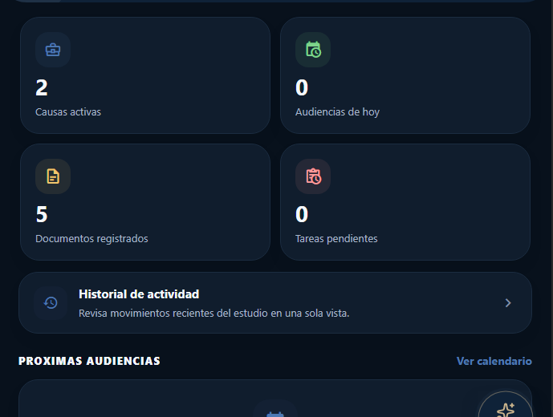
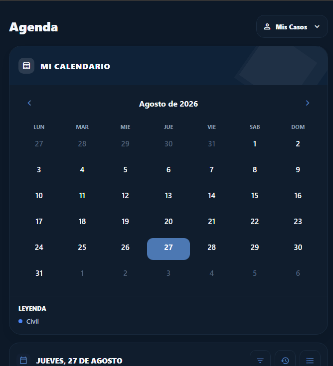

Tecnología jurídica con propósito
Cuando el tiempo importa, cada minuto recuperado puede cambiar una historia.
LuxIA reduce el trabajo administrativo de los profesionales del derecho para que puedan dedicar más tiempo a cada caso, acompañar mejor a las personas y ayudar a más gente.
Diseñada para asistir al profesional, no para sustituirlo.


Plataforma realEn funcionamiento
Impacto social
El tiempo también forma parte de la Justicia.
Expedientes, documentos, audiencias y tareas repetitivas consumen horas de trabajo profesional que podrían estar dedicadas a comprender mejor cada situación.
En procesos sensibles, como una adopción, el tiempo no es solamente un dato: forma parte de la vida de una persona. LuxIA busca agilizar el trabajo que rodea cada caso, sin reemplazar el criterio humano.
Menos carga operativa
Más tiempo de análisis
Decisión siempre humana
Una plataforma, todo el contexto
El trabajo jurídico, conectado.
LuxIA reúne causas, documentos, audiencias, calendario y asistencia inteligente en un entorno pensado para la práctica profesional cotidiana.
LuxIA
Contexto integrado
Funciones
Herramientas que acompañan cada etapa.
Una base operativa para organizar mejor la información y recuperar tiempo de trabajo valioso.
01 / Núcleo
Gestión de causas
Expedientes, estado, información relevante y seguimiento reunidos en un mismo lugar.
02 / Archivo
Organización documental
Archivos vinculados a cada causa para encontrarlos con mayor claridad.
03 / Tiempo
Agenda de audiencias
Fechas y compromisos organizados para sostener el ritmo de trabajo.
04 / Registro
Transcripción de audiencias
Registro en vivo o posterior para transformar audio en material de consulta.
05—08 / Inteligencia aplicada
Información más fácil de revisar.
- Consulta y búsqueda de información
- Análisis asistido de documentos
- Detección de datos relevantes e inconsistencias
- Notificaciones y seguimiento
Aplicación real
No es una idea. Es una plataforma en funcionamiento.
Estas son vistas reales de LuxIA. Las imágenes fueron recortadas para proteger cualquier dato personal o contenido de prueba.
Equipo
Las personas detrás de LuxIA.
Un equipo interdisciplinario que combina producto, desarrollo, diseño y una mirada humana sobre la tecnología.
Seguridad por diseño
En una plataforma jurídica, la seguridad no es una función adicional: es parte de la arquitectura.
LuxIA considera la protección y el control desde la forma en que se organiza el producto. Sin promesas absolutas: con decisiones conscientes y supervisión profesional.
Privacidad
La información se trata como un activo sensible.
Control de acceso
Acceso vinculado a usuarios y espacios de trabajo.
Infraestructura propia
Componentes administrados como parte del producto.
Copias de seguridad
Respaldo contemplado dentro de la operación.
Supervisión humana
El profesional conserva el control de las decisiones.
Hablemos